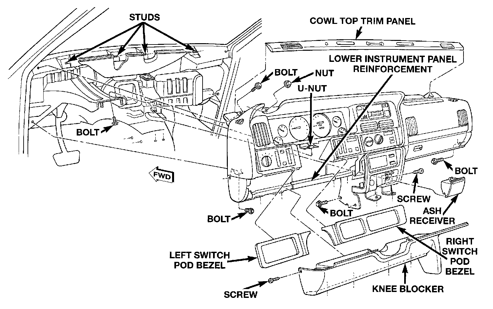

Instrument Panel Assembly
INSTRUMENT PANEL ASSEMBLYWARNING: ON VEHICLES EQUIPPED WITH AIRBAGS, REFER TO PASSIVE RESTRAINT SYSTEMS BEFORE ATTEMPTING STEERING WHEEL, STEERING COLUMN, OR INSTRUMENT PANEL COMPONENT DIAGNOSIS OR SERVICE. FAILURE TO TAKE THE PROPER PRECAUTIONS COULD RESULT IN ACCIDENTAL AIRBAG DEPLOYMENT AND POSSIBLE PERSONAL INJURY.
(1) Disconnect and isolate the battery negative cable.
(2) Remove the left and right switch pod bezel as.
(3) Remove the knee blocker as described.
Instrument Panel Assembly Remove/Install:

(4) Remove the two bolts securing the lower instrument panel reinforcement to the instrument panel armature and remove the reinforcement.
(5) Remove the upper and lower steering column shrouds. Refer to Steering and Suspension.
(6) Unplug all of the wiring connectors on the steering column-mounted components and switches.
(7) Remove the three nuts securing the steering column toe plate at the base of the steering column.
(8) Remove the two nuts securing the steering column mounting bracket to the studs on the steering column and brake pedal support and lower the steering column to the floor.
(9) Remove the right and left cowl side trim panels.
(10) Unplug the instrument panel to body wiring connector under the left end of the instrument panel.
(11) Unplug the brake lamp switch wiring connector.
(12) Unplug the instrument panel to heater-A/C housing vacuum connector (manual temperature control only) and wiring connector located under the right side of the instrument panel.
(13) Unplug the radio antenna coaxial cable connector near the right cowl side panel.
(14) Unplug all of the instrument panel wiring connectors from the junction block on the right cowl side panel.
(15) Disconnect the in-car temperature sensor aspirator hose at the coupling near the right side of the transmission floor tunnel, if so equipped.
(16) Remove the ash receiver and then remove the screw in the back of the ash receiver housing securing the instrument panel armature to the heater-A/C housing.
(17) Pull back the floor carpet on the transmission floor tunnel from the base of the instrument panel center bezel and remove the two bolts securing the instrument panel center bracket to the floor.
(18) Remove the two bolts securing the instrument panel center bracket to the left side of the transmission floor tunnel.
(19) Remove the bolt securing the instrument panel armature to the steering column and brake pedal support.
(20) Remove the two bolts securing the ends of the instrument panel armature to the cowl side panels.
(21) Remove the cowl top trim panel as described.
(22) Remove the two bolts securing the ends of the instrument panel armature to the windshield fence.
(23) Remove the four nuts securing the top of the instrument panel armature to the studs on the windshield fence.
(24) With the aid of an assistant, lift the instrument panel off of the windshield fence studs and maneuver the assembly out of the passenger's side front door.
(25) Reverse the removal procedures to install. Tighten the mounting hardware as follows:
^ Instrument panel to windshield fence bolts and nuts 5 N.m (45 in. lbs.)
^ Instrument panel to cowl side panel bolts 12 N.m (105 in. lbs.)
^ Instrument panel to steering column support bolt 12 N.m (105 in. lbs.)
^ Knee blocker mounting screws 2.2 N.m (20 in. lbs.)